Publications
2026
- CVPR ’26Real-time Gaussian Splatting with Progressive Block-based 3D ReconstructionIn Proceedings of the IEEE/CVF Conference on Computer Vision and Pattern Recognition (CVPR) (CVPR ’26) , 2026
2025
- ACM BuildSys ’25OmniFlow: A Framework for Generalizable Surrogates for Real-Time Airflow Simulation and Control in Unseen Indoor EnvironmentsIn Proceedings of the 12th ACM International Conference on Systems for Energy-Efficient Buildings, Cities, and Transportation (BuildSys) (ACM BuildSys ’25) , 2025
2024
- CVPR ’24MonoSelfRecon: Purely Self-Supervised Explicit Generalizable 3D Reconstruction of Indoor Scenes from Monocular RGB ViewsIn Proceedings of the IEEE/CVF Conference on Computer Vision and Pattern Recognition (CVPR) (CVPR ’24) , 2024
- ICRA ’24V2CE: Video to Continuous Events SimulatorIn 2024 IEEE International Conference on Robotics and Automation (ICRA) (ICRA ’24) , 2024
- Book Chapter ’24Immersive User Experiences: Trends and Challenges of Using XR TechnologiesIn Computer Vision: Challenges, Trends, and Opportunities (Book Chapter ’24) , 2024
- Book ’24Computer Vision: Challenges, Trends, and OpportunitiesCRC Press (Book ’24) , 2024
2023
- Neurocomputing ’23Neuromorphic High-Frequency 3D Dancing Pose Estimation in Dynamic EnvironmentNeurocomputing (Neurocomputing ’23) , 2023
2022
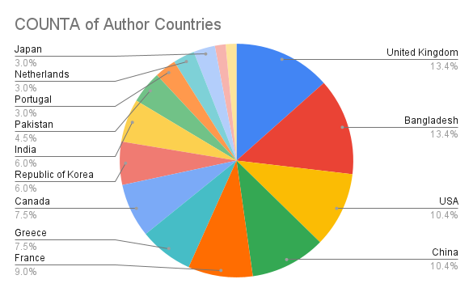
PRL Editorial ’22
2021
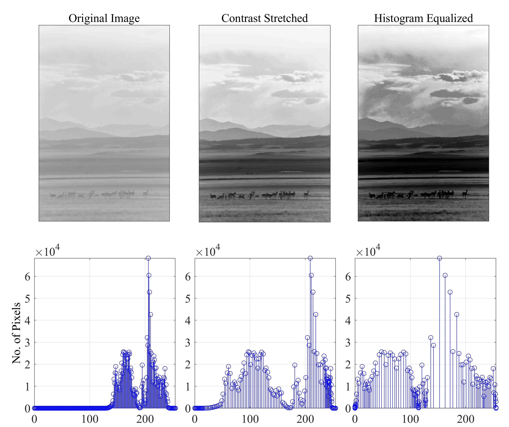
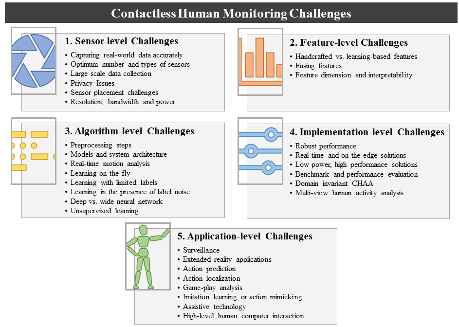
Book Chapter ’21Contactless human monitoring: challenges and future directionIn Contactless Human Activity Analysis (Book Chapter ’21) , 2021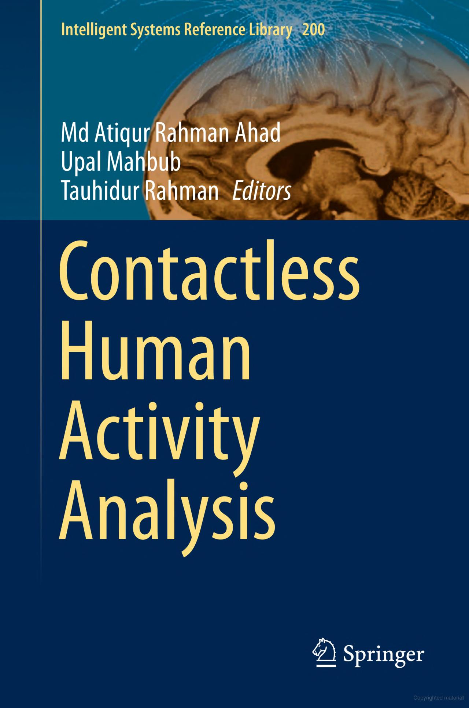
Book ’21
2020
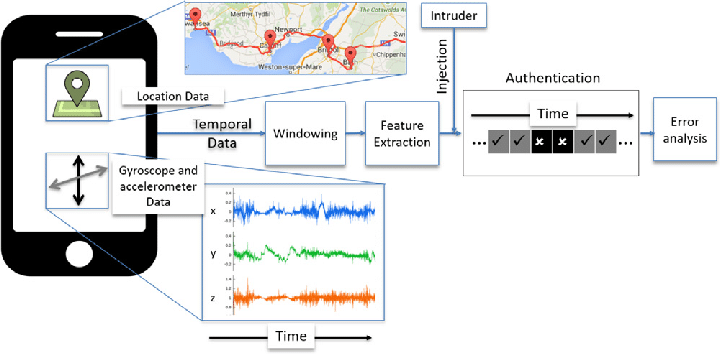
Impact of injection attacks on sensor-based continuous authentication for smartphonesComputer Communications , 2020
2019
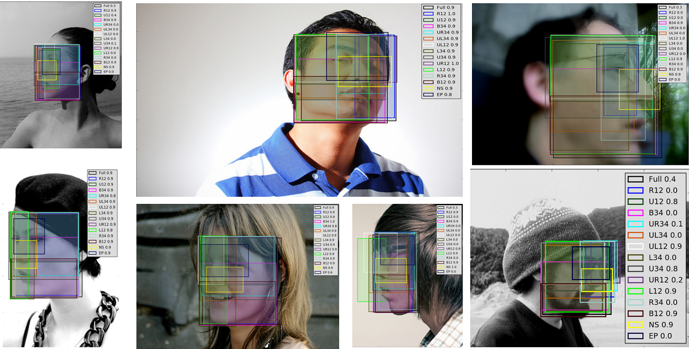
IVC ’19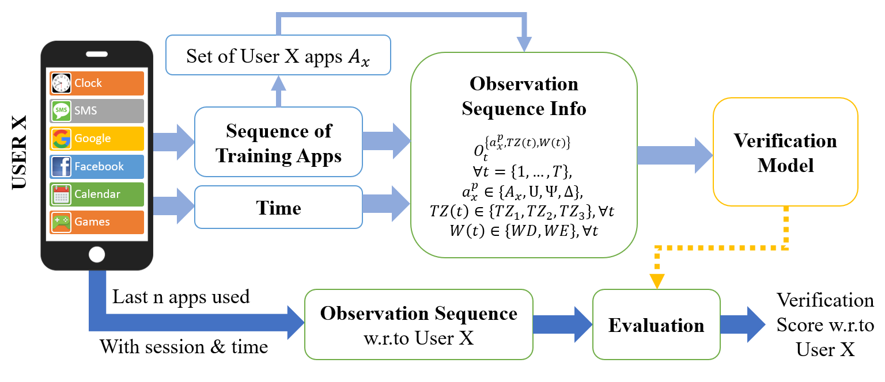
T-Biom ’19Continuous authentication of smartphones based on application usageIEEE Transactions on Biometrics, Behavior, and Identity Science (T-Biom ’19) , 2019
2018
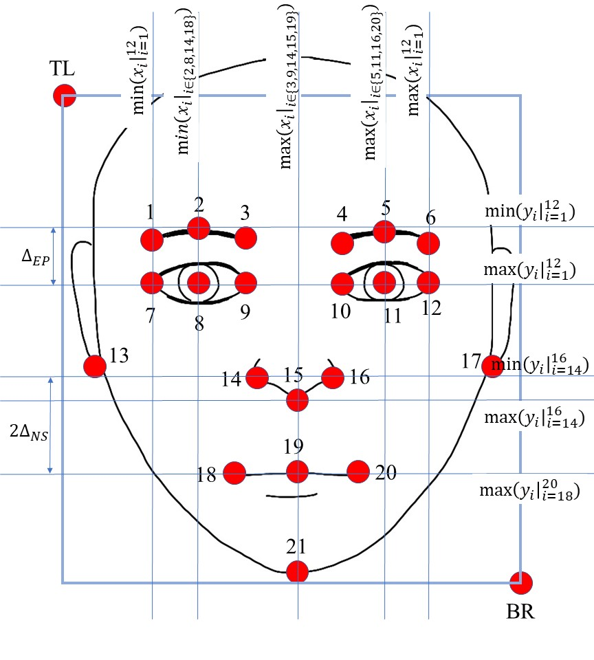
TAFFC ’18Segment-based methods for facial attribute detection from partial facesIEEE Transactions on Affective Computing (TAFFC ’18) , 2018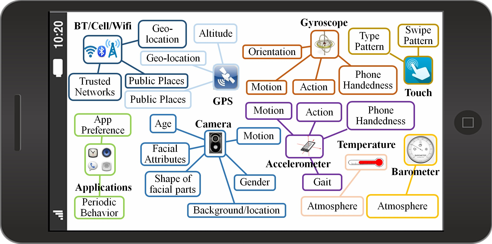
Ph.D. Thesis
2017
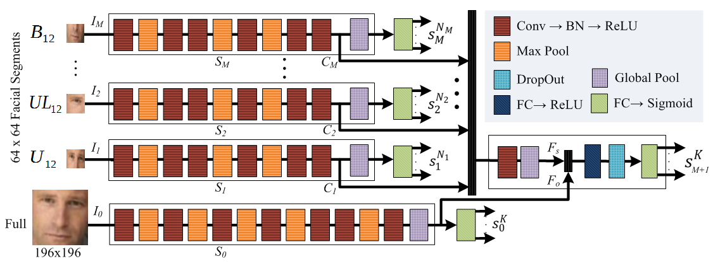
FG ’17Pooling facial segments to face: The shallow and deep endsIn 2017 12th IEEE International Conference on Automatic Face & Gesture Recognition (FG 2017) (FG ’17) , 2017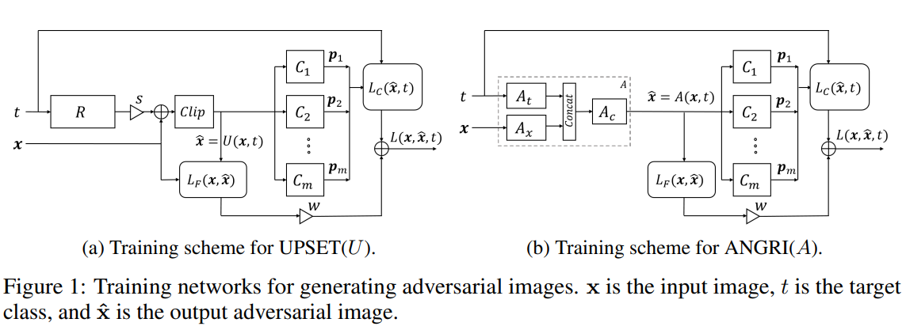
UPSET and ANGRI: Breaking high performance image classifiersarXiv preprint arXiv:1707.01159 , 2017
2016
- Allerton ’16New methods for handling binary constraints.In Allerton (Allerton ’16) , 2016
2015
- Exploiting wavelet and prosody-related features for the detection of voice disordersAmerican Journal of Biomedical Engineering & Technology , 2015
- Human action recognition based on spectral domain featuresProcedia computer science , 2015
2014
- Action recognition based on statistical analysis from clustered flow vectorsSignal, Image and Video Processing , 2014
- A single-channel acoustic echo cancellation scheme using gradient-based adaptive filteringCircuits, Systems, and Signal Processing , 2014
- Gradient Based Adaptive Algorithm for Echo Cancellation from Recorded Echo Corrupted SpeechAdvances in Electrical Engineering , 2014
- Single-channel acoustic echo cancellation in noise based on gradient-based adaptive filteringEURASIP Journal on Audio, Speech, and Music Processing , 2014
- Action Recognition by Exploiting Wavelet FeaturesInternational Journal of Intelligent Computing in Medical Sciences & Image Processing , 2014
2013
- A template matching approach of one-shot-learning gesture recognitionPattern Recognition Letters , 2013
- Temporal segmentation of gestures using gradient orientation of depth imagesIn 2013 International Conference on Informatics, Electronics and Vision (ICIEV) , 2013
- One-shot-learning gesture recognition using motion history based gesture silhouettesIn Proceedings of the International Conference on Industrial Application Engineering , 2013
- A multi-resolution action recognition algorithm using wavelet domain featuresIn 2013 2nd IAPR Asian Conference on Pattern Recognition , 2013
2012
- Series active power filter implementation using PQ theoryIn 2012 International Conference on Informatics, Electronics & Vision (ICIEV) , 2012
- Gesture recognition with depth images—a simple approachIn 2012 Proceedings of SICE Annual Conference (SICE) , 2012
- Motion clustering-based action recognition technique using optical flowIn 2012 International Conference on Informatics, Electronics & Vision (ICIEV) , 2012
- Fuzzy logic driven adaptive pid controller for pwm based buck converterIn 2012 International Conference on Informatics, Electronics & Vision (ICIEV) , 2012
- Detection of voice disorders based on wavelet and prosody-related propertiesIn 2012 IEEE International Symposium on Circuits and Systems (ISCAS) , 2012
- Gradient based adaptive filter algorithm for single channel acoustic echo cancellation in noiseIn 2012 7th International Conference on Electrical and Computer Engineering , 2012
2011
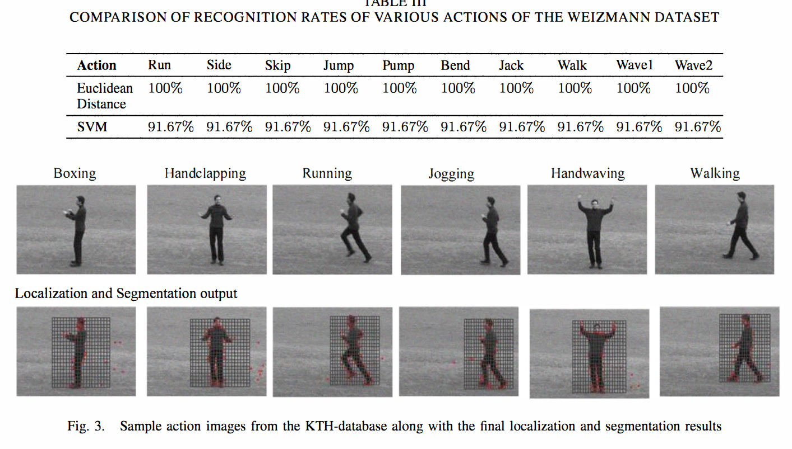
Best Paper: ICCIT ’11An optical flow based approach for action recognitionIn 14th international conference on computer and information technology (ICCIT 2011) (Best Paper: ICCIT ’11) , 2011- Action recognition algorithm based on optical flow and RANSAC in frequency domainIn SICE Annual Conference 2011 , 2011
- Synchronous detection and digital control of shunt active power filter in power quality improvementIn 2011 IEEE Power and Energy Conference at Illinois , 2011
- An optical flow-based action recognition algorithmIn IEEE conference on computer vision and pattern recognition , 2011
- MS Thesis ’11Acoustic echo and noise cancellation schemes using time and frequency domain adaptive techniques(MS Thesis ’11) , 2011
2010
- An adaptive noise cancellation scheme using particle swarm optimization algorithmIn 2010 International Conference on Communication Control and Computing Technologies , 2010
- A time domain approach of acoustic echo cancellation based on particle swarm optimizationIn International Conference on Electrical & Computer Engineering (ICECE 2010) , 2010
- An acoustic echo cancellation scheme based on particle swarm optimization algorithmIn TENCON 2010-2010 IEEE Region 10 Conference , 2010
2009
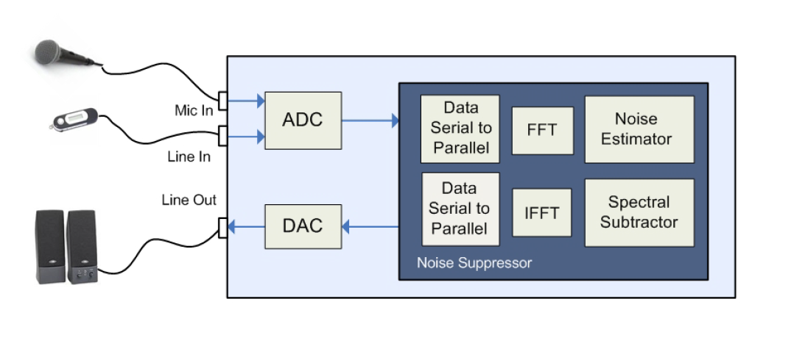
FPGA implementation of real time acoustic noise suppression by spectral subtraction using dynamic moving average methodIn 2009 IEEE Symposium on Industrial Electronics & Applications , 2009
Patents
A selection of my granted U.S. patents is listed below. For the full, up-to-date list, follow this Link.- Joint Watermarking of Neural Network Weights and OutputUS Patent 12,519,626 , 2026
- Low-Power Fusion for Negative Shutter Lag CaptureUS Patent 12,212,859 , 2025
- Apparatus and Methods for Object Detection Using Machine Learning ProcessesUS Patent 12,073,611 , 2024
- Camera Initialization for Reduced LatencyUS Patent 11,877,048 , 2024
- Multi-Stage Neural Network Process for Keypoint Detection in an ImageUS Patent 12,112,569 , 2024
- Low-Power Fusion for Negative Shutter Lag CaptureUS Patent 11,800,242 , 2023
- Three-Dimensional Scan Registration with Deformable ModelsUS Patent 11,769,263 , 2023
- Modeling Objects from Monocular Camera OutputsUS Patent 11,748,913 , 2023
- Compact Encoded Heat Maps for Keypoint Detection NetworksUS Patent 11,710,344 , 2023
- Region of Interest Capture for Electronic DevicesUS Patent 11,381,743 , 2022
- Multi-Stage Neural Network Process for Keypoint Detection in an ImageUS Patent 11,256,956 , 2022